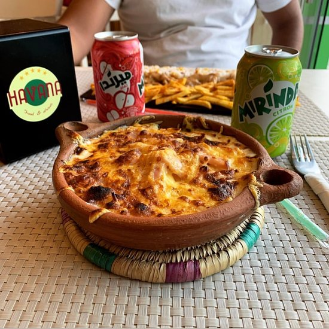

Pasticcio

Description
Pasticcio is a savory baked casserole that combines layers of potato
fries, a rich meat sauce, and a creamy béchamel sauce.
Ingredients
- Potato Fries
- Meat Sauce
- Béchamel Sauce
- Mozarella
- Ground beef
Steps
- Prepare potato fries
- Add béchamel sauce
- Add cooked ground beef
- Add mozarella on top
- Bake in the oven